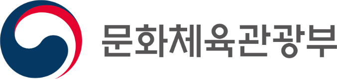
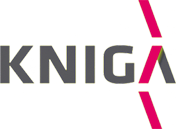
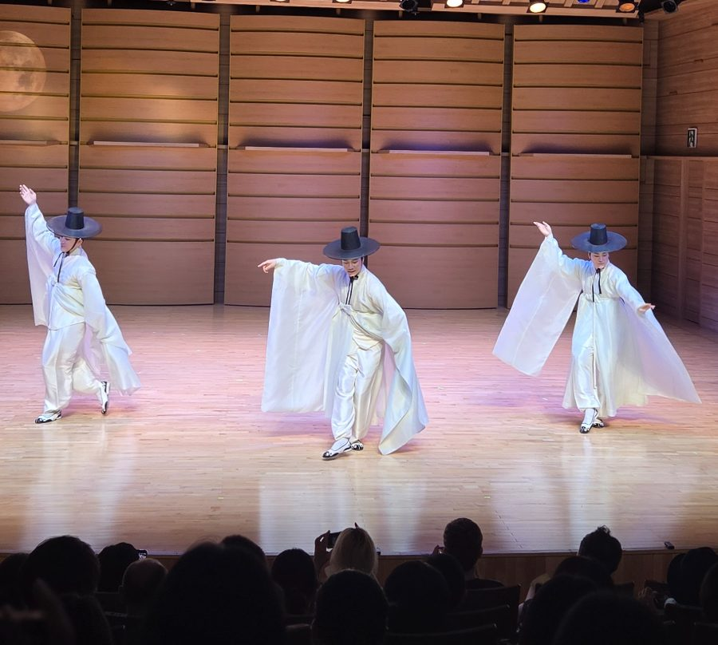

프로젝트 개요
K예술영재 프로젝트는 음악 · 무용 · 전통예술 · 미술 네 개 분야의 예술영재를 발굴하고, 분야별 정규 워크숍에서 심화 멘토링, 겨울캠프로 이어지는 단계별 교육과정을 운영하는 예술영재 육성 사업입니다. 단발성 캠프가 아니라 1년 단위의 연속 과정으로 설계되어 있으며, 만족도조사와 평가회의 결과는 다음 해 교육과정 설계의 근거가 됩니다.
사업 개요
- 사업명
- K예술영재 프로젝트
- 주관
- 한국예술영재교육연구원
- 대상 분야
- 음악 · 무용 · 전통예술 · 미술 (4개 분야)
- 주요 과정
- 분야별 정규 워크숍 → 심화 멘토링 → 겨울캠프
- 운영 장소
- 한국예술영재교육원 광주캠퍼스, 한국과학기술원 일대, 한국예술종합학교 석관동캠퍼스, 한국예술종합학교 서초동캠퍼스
추진 목표
- 01
발굴
분야별 전문 교강사가 참여하는 워크숍을 통해 잠재력을 가진 예술영재를 폭넓게 발굴합니다.
- 02
육성
정규 과정과 심화 멘토링, 합숙형 겨울캠프로 이어지는 단계별 커리큘럼을 제공합니다.
- 03
개선
만족도조사와 평가 결과를 바탕으로 교육과정을 꾸준히 개선합니다.
추진체계 · 참여기관
추진 체계
주최

주관

한국예술영재교육연구원사업 총괄 · 교육과정 설계 · 교강사 위촉
 음악
음악 무용
무용
전통예술 미술
미술
운영 흐름
한 해의 성과가 다음 해 과정 설계로 이어집니다.
- 1
모집 · 배정
분야별 참여 학생을 모집하고 전공·수준에 따라 반을 배정합니다
- 2
정규 워크숍
분야마다 다른 커리큘럼으로 집중 워크숍을 운영합니다
- 3
평가 · 수요조사
만족도조사와 교강사 평가회의로 심화과정 대상을 정합니다
- 4
심화과정
심화 멘토링과 겨울캠프로 성장을 이어 갑니다
- 5
성과 정리 · 개선
만족도조사와 평가 결과를 다음 해 교육과정 설계에 반영합니다
↻ 다시 1 모집 · 배정으로
연간 로드맵
계절에 따라 이어지는 한 해의 과정입니다. 해마다 세부 일정은 공지사항으로 안내합니다.
- 봄
사업 준비 · 참여자 모집
교육과정 설계, 교강사 위촉, 분야별 참여 학생 모집 및 반 배정
- 여름
분야별 정규 워크숍
4개 분야 집중 워크숍 운영
- 여름 – 가을
평가 · 수요조사
만족도조사, 교강사 평가회의, 심화과정 참여 수요조사
- 가을 – 겨울
심화 멘토링
분야별 전담 교강사 멘토링
- 겨울
겨울캠프
네 분야가 함께하는 합숙 집중과정과 갈라공연
- 겨울
성과 정리 · 다음 해 설계
연간 성과 정리 및 다음 해 과정 설계